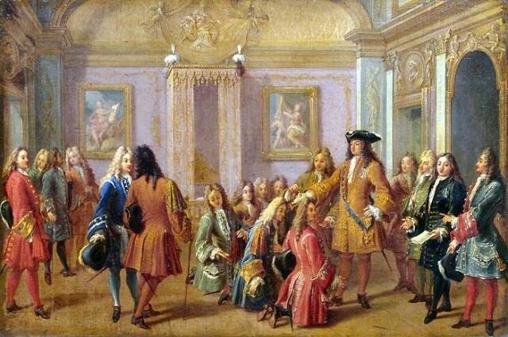
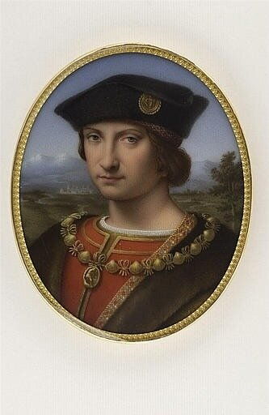
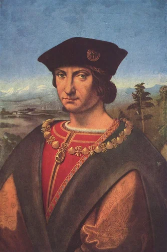
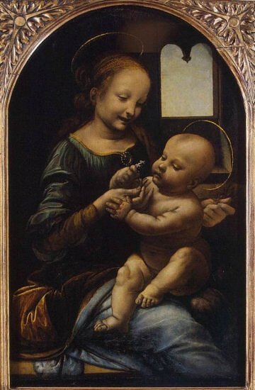
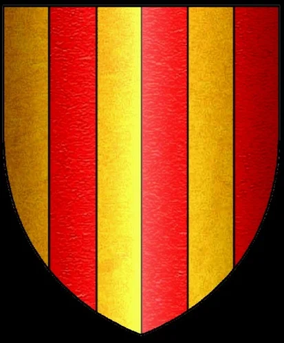
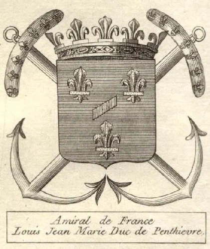
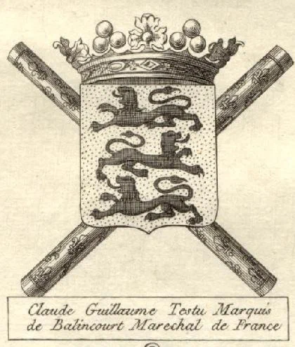

А собственно, почему Генерал, а не Адмирал? Попытался найти этому объяснение и попал в такие дебри, что выбираться из них придется не один день. Если у кого-нибудь есть версии на этот счет, с интересом послушал бы.
Но сегодня как раз не о генералах, а об Адмирале Франции. И о том, какое он имеет отношение к нашему соотечественнику, одному из основателей объединения «Мир искусства» Александру Николаевичу Бенуа.
Как известно, структура высших должностных лиц Короны (Les Grands Officiers de la Couronne) формировалась во Франции постепенно. Королевской грамотой (lettre patente) 1582 года Генрих III ограничил перечень этих лиц следующими должностями: коннетабль (Connétable), канцлер (Chancelier), Главный дворецкий (Grand Maître), камергер (Chambellan), адмирал Франции (amiral de France) и маршалы Франции (maréchaux de France).

В начале XVI века тремя из этих титулов владел Шарль II д’Амбуаз (Charles II d’Amboise, 1473-1511), ставший Главным дворецким короля в 1502 году, Маршалом Франции в 1504 и Адмиралом Франции в 1508 году.

Эти назначения были бы невозможны без родственных связей молодого человека. Он был сыном Шарля I д’Амбуаза, фаворита Людовика XI, губернатора Шампани и Бургундии, и, что самое главное для карьеры во Франции тех лет, – племянником кардинала Жоржа д'Амбуаза, первого министра Людовика XII. Поражает набор должностей юного политика: мэр Парижа, управитель герцогства Милан, сеньор Генуи и провинции Нормандия, генерал-лейтенант в Ломбардии. О военных и морских заслугах этого молодого человека мы поговорим в будущем, а сейчас я хочу привести одну историю, которая для меня оказалась неожиданной.
Известно, что большинство значительных научных (и не только) открытий делается на стыке двух или нескольких наук. Мне пришлось убедиться в этом, правда не на примере науки, а на примере своих занятий историей флота. Совершенно случайно я пришел к мысли, что адмирал Шарль д’Амбуаз и известный меценат и друг Леонардо да Винчи, в миланском доме которого великий ученый и художник провел несколько лет – одно и то же лицо. Раньше я воспринимал их «порознь». Пробежав сразу же первые попавшиеся мне материалы об этом периоде жизни Леонардо, узнал о настоящей дружбе между французским адмиралом и гениальным художником и ученым. Причем, эта дружба не способствовала созданию новых произведений живописи великим мастером. Когда Леонардо оказался в Милане, под покровительством д’Амбуаза, он, почувствовал себя свободным, не связанным с необходимостью выполнять живописные заказы сильных мира сего и смог вернуться к своему любимому делу - научным занятиям. 12 сентября 1508 года он начал наброски трактата по космологии: он определяет положение Земли между другими небесными телами, переходит к исследованию ее строения, к вопросу о соотношении между водой и сушей, о движении вод, об образовании гор и долин и т. п. В течение 1509 года Леонардо с увлечением занимается практической гидрологией, им была совершена постройка нового шлюза в системе больших каналов, имевшая целью предохранить Милан и его окрестности от наводнения.
Несчастье подстерегло Леонардо с неожиданной стороны. Его друг и покровитель умер в Ломбардии в 1611 году, имея от роду 38 лет.

Разбираясь в особенностях взаимоотношений маршала и адмирала Франции с Леонардо да Винчи, неожиданно натолкнулся на незначительный, казалось бы, факт: художник подарил Шарлю д’Амбуазу свою первую картину, написанную маслом, «Мадонну с цветком». Картина по сообщениям нескольких свидетелей висела в миланском доме адмирала. Но, простите, это же «наша» «Мадонна Бенуа», полотно из Эрмитажа.

Срочно полез на полки с книгами, взял «Мои воспоминания» Бенуа – ну да, вот Глава 26 Книги IV озаглавлена «Мадонна Леонардо да Винчи…» Чтобы не пересказывать суть написанного там, приведу прямые цитаты:
«Несмотря, однако, на то, что я всем существом рвался в Париж, мне пришлось, внемля настойчивым просьбам брата Леонтия и его жены, еще на целый день остановиться в Берлине. Дело в том, что они мне поручили показать принадлежащую им картину — знаменитому Боде. Эта картина представляла собой исключительную ценность. То была та самая «Мадонна с гвоздикой», которая в собрании Сапожниковых в Астрахани считалась за произведение Леонардо да Винчи и которая ныне всеми авторитетами за таковое и признана, войдя в историю искусства под названием «Мадонны Бенуа» *.
* В сущности, это название «Мадонна Бенуа» нельзя считать обоснованным; оно «не заслужено» нашей фамилией, но так ее окрестил Э. К. Липгардт, который через несколько лет добился того, чтобы картина была уступлена Эрмитажу. Я же предлагал тогда в Берлине другое наименование, а именно, «Madonna aus dem Hause Sapognikoff» [«Мадонна из дома Сапожниковых (нем.)], и действительно, в астраханском доме родителей моей belle-soeur эта картина находилась в течение почти целого века, после того, как она (так гласит предание) была куплена дедом Марии Александровны у какой-то труппы странствующих актеров. Далее в глубину времени ее происхождение, к сожалению, нельзя проследить, документальный ее след теряется с самого момента ее создания в 80-х годах XV в. во Флоренции. Лишь существование нескольких копий с нее конца XV и начала XVI в. показывает, что она пользовалась исключительной славой» (Прим. А.Бенуа).
«Я лично тогда не совсем верил в авторство знаменитейшего художника, но этого признания мне нечего сейчас особенно стыдиться, раз такой же скепсис я встретил в лице всех тех немецких и французских светил, которым я эту картину показал."
Далее следует описание встреч Бенуа с экспертами берлинских музеев, которые поначалу выразили сомнение в принадлежности картины кисти Леонардо.
"Этот пифический ответ я сообщил затем Мюллеру Вальде, и тогда последний предложил мне картину тотчас же продать,— у него-де имеется кто-то в виду для этой покупки. Я ответил, что мой брат с картиной не желает расстаться, чем беспредельно огорчил почтенного профессора, уже замечтавшего о том, что Мадонна останется за Берлином. Так, ничего положительного не добившись, я повез Леонардо в Париж, где это бесценное произведение и пребывало затем целый год частью у меня в моей более чем скромной квартирке на rue Delambre, частью у старичка реставратора de Nizrad'a, которого мне горячо рекомендовал Camille Benoit, кстати сказать, тоже с авторством Леонардо не соглашавшийся. Реставрация ограничилась снятием старого пожелтевшего лака и некоторых грубоватых записей; вообще же картина была в отличной сохранности, после того, что еще в 1820-х годах она была переведена с дерева на холст искусным русским реставратором Митрохиным.»
Итак, А.Бенуа считал, что след картины теряется с момента ее создания. Но тогда как же быть с свидетельствами о ее нахождении в доме адмирала д’Амбуаза в Милане? Дальше больше. Оказывается на раме картины, которая сохранилась с самых давних времен, имелось изображение герба д’Амбуаза.

Герб мог быть в таком виде, но мог быть вписан в герб адмирала Франции, как показано ниже

или в герб маршала Франции, подобно образцу внизу:

Как бы то ни было, но наличие герба на раме послужило одним из доказательств подлинности полотна (впрочем, не полотна, а доски, как явствует из текста А.Бенуа). А куда подевалась эта рама? Также находится в Эрмитаже и имеет вид, как на репродукции выше? Или навсегда утрачена? Наверняка, все это где-то описано, надо просто найти. Или спросить знающих людей. Продолжу эту тему, если соберу дополнительную информацию.